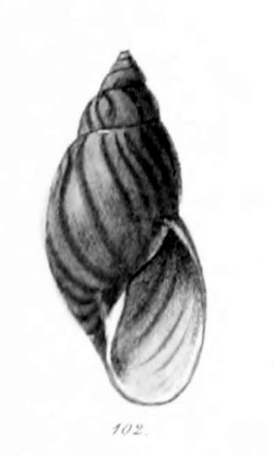
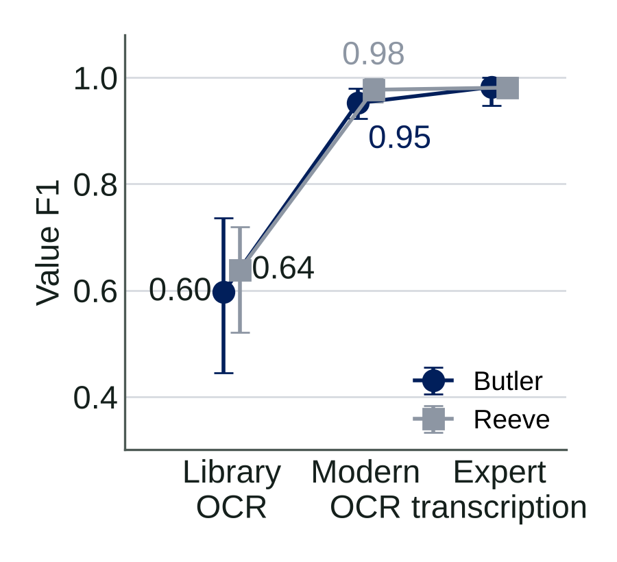

01 · Motivation
An agent that quotes the OCR faithfully can still file the wrong species.


Reeve, Conchologia iconica (1849), BHL page 8966790. The Biodiversity Heritage Library holds 64 million scanned pages like this.
02 · Methodology
Same page, three texts: the model points, code writes the value
Point, not write
Code finds the quote in line 2 and slices the value from the text. A quote that differs from the text is logged as a silent correction.
Pre-registered, frozen before the test pages · extraction models: Claude Opus 5.5, Gemini 4 Carbon · after Lei, Docherty & Cooper (2024)
03 · Results
Most evidence was lost at reading and linking; extraction lost little on these pages
OCR · Butler
0.60 → 0.95
value F1, same pages, better OCR
Entity linking
14 / 34
read right, still not linked
Shared errors
99–100%
model agreement; auto-accept set on library OCR still held 50 (Butler) and 75 (Reeve) errors
A · Three texts: OCR decides F1

B · Names intact predict F1

Page CER does not (ρ = −0.11 / −0.61)
C · Linking 34 correctly read names

04 · Try it
Printed, or written by OCR?
Can you spot the error a scientific agent might miss?

Reeve, Conchologia iconica (1849), BHL page 8966790
Which name is on the page?
Both look scientifically plausible. Only one is supported by the source.
Answer: B. A is a modern OCR model's reading.
Exploratory extension: classical Chinese
 → 陶弘景
→ 陶弘景本草綱目 manuscript: the model writes the modern form.
05 · Proposed Framework
Code owns the text; the model points, quotes, and defers
* Exploratory results: ~8% of changed values were incorrect; LLM-assisted linking improved recall from 0.59 to 0.91 (Opus).
06 · Conclusion
Three rules for evidence-grounded scientific agents
- Gate perception on entity survival, not average error. Low page CER can hide broken scientific names, and fluent OCR errors look plausible and resist downstream repair.
- Spend reasoning on linking, not extraction. On clean text a small model extracts nearly as well at ~1/15 of the cost; an LLM linker lifted name-link recall from 0.59 to 0.91 (exploratory).
- Separate verification from consensus. Two models agreeing on 99–100% of values would still auto-accept shared upstream mistakes. Let code slice verbatim evidence; route review by independent checks.
Scope and next. Pre-registered pilot on two English printed books (16 locked test pages); now extending to a vertical, hand-copied Chinese manuscript (Bencao gangmu) and to timed human audits.
Connect & Explore
A map of AI4S people, research,
companies and capital, read at source.
 ai4s.fyi
ai4s.fyi LinkedIn
LinkedInDekun (Gloria) Sun on LinkedIn · @gloria_sun on X